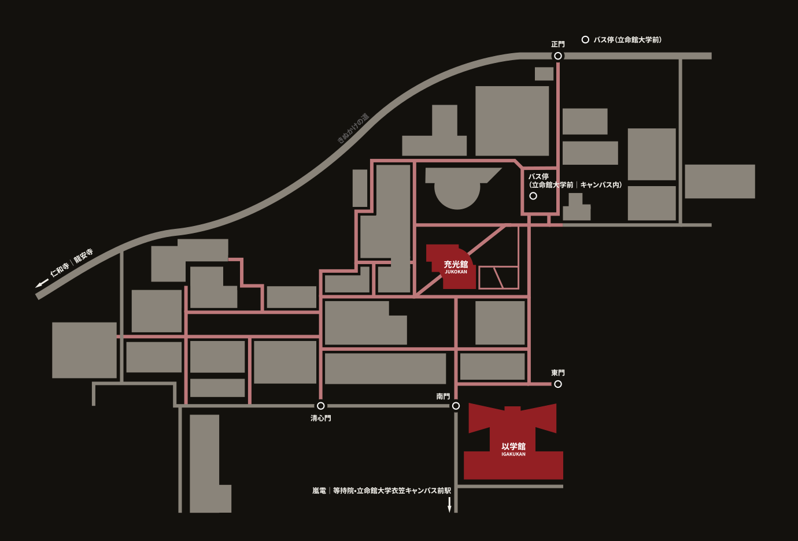

ACCESS
アクセス
会場は立命館大学 衣笠キャンパスの「以学館」と「充光館」の2棟です。
交通のご案内
JR・近鉄「京都」駅から
- 市バス・JRバス「快速 立命館」─「立命館大学前」下車（終点）約36分
- 市バス50系統 ─「立命館大学前」下車（終点）約42分
- 市バス205系統 ─「衣笠校前」下車 徒歩約10分／約38分
阪急「西院（さいいん）」駅から
- 市バス・JRバス「快速 立命館」─「立命館大学前」下車（終点）約15分
- 市バス205系統 ─「衣笠校前」下車 徒歩約10分／約13分
嵐電（京福電車）から
- 北野線「等持院・立命館大学衣笠キャンパス前」駅下車 徒歩約7分
※キャンパス内に来客用駐車場はありません。公共交通機関をご利用ください。
※11月15日は日曜のため、平日と運行ダイヤが異なります。時間に余裕をもってお越しください。
周辺地図
使用会場
以学館IGAKUKAN
- トークセッションホール
充光館JUKOKAN
- 学生プロポジションB1（JK001／002／003）
- ZINE即売会／書籍販売1F DAギャラリー
- 懇親会B1（JK001）
※受付場所は後日ご案内します。
構内マップ

※以学館と充光館のあいだで棟間移動があります。構内の順路は当日ご案内します。